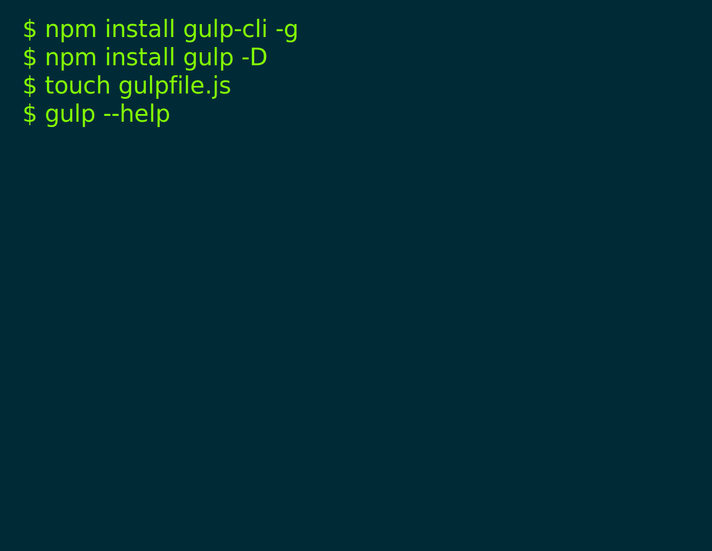

Automate and enhance your workflow


By preferring code over configuration, node best practices, and a minimal API surface - gulp makes things simple like never before.

Using the power of node streams, gulp gives you fast builds that don't write intermediary files to disk.

By enforcing strict guidelines, we ensure our plugins stay simple and work as expected.
With your support you'll help us cover all the expenses our project needs to keep going!
Become a backer or sponsor